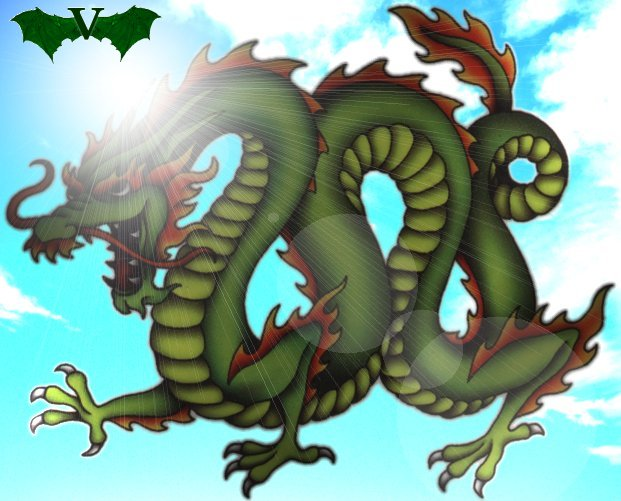
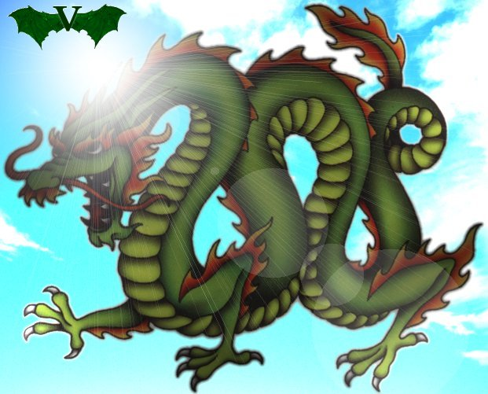

Pet Dragons 2
PD2: A Difficult Game
Pet Dragons 2
is a game developed by
LiquidFyre.
You need a facebook account to play.
PD2 is a little difficult to play at first, but when you've played for some time, you realize it is also extremely hard to master... so there's a balance there... sort of ;-)
PD2 is a little difficult to play at first, but when you've played for some time, you realize it is also extremely hard to master... so there's a balance there... sort of ;-)
Math
Lots of people have made educated (and wild) guesses as to the math behind the game.
One of these threads of guesses
have made me create
this page for calculating an approximate "balanced build".
The calculator hasn't been modified since early 2011 - I've been notified that my experimental speed calculations don't fit for larger dragons, so you should probably stay with the original formula there.
The calculator hasn't been modified since early 2011 - I've been notified that my experimental speed calculations don't fit for larger dragons, so you should probably stay with the original formula there.
My Dragon
My dragon is called
DarWe
and this is what he looks like:

(Note: As per Seventh Day policy the picture, where DarWe wears the their tag, is no longer available.)

(Note: As per Seventh Day policy the picture, where DarWe wears the their tag, is no longer available.)
Motto
DarWe's motto is: "I eat Ching, once eat Confucius too".
This rather pidgeon English sounding motto has some hidden meanings!
This rather pidgeon English sounding motto has some hidden meanings!
-
"I eat Ching" pronounces almost like "
I Ching
", which is an ancient Chinese method of fortunetelling, which hints at the fact, that DarWe's favorite element is:
- Psychic. -
Now, Master Confucius was mixed up in the creation
of I Ching - but "
Konfu
" also happens to be the Danish word for an Asian martial art, which in turn has given name to a Danish ice lolly (white with a brown belt of cola flavor, overlaid with white liquorice tip), so actually this hints at two other elements DarWe has used:
- Ice which he used a lot for half a year, and
- Air which he used in the early days (up until around age 180).
(He has also been Metal for a while, but that's a whole different story - and not a very successful one.)
Clans
Clans were never fully incorporated into pd2,
but even so they're the main reason the game still exists.
It is so much more fun to have people to discuss politics and assists with.
It is so much more fun to have people to discuss politics and assists with.
First Clan: WDoV
DarWe used to be a member of the proto-clan
"Winged Dragons of Vatchestan"
(even though he has no wings and flies by use of telekinesis!).
Much fun was had; but as of August 2012 WDoV was practically defunct.
You can find watermarks for WDoV here.
Much fun was had; but as of August 2012 WDoV was practically defunct.
You can find watermarks for WDoV here.
Previous Clan: TSD
I joined up with The Seventh Day for a while.
Current Clan: WDoV - again
After a two year pause in playing
I donned the WDoV banner again.
It has no obligations and better fits my very casual
playing style.
I am only online for a few days before pausing again, and I don't much care for the extra, imho unnecessary rules, that all clans (except WDoV) want their members to follow.
I am only online for a few days before pausing again, and I don't much care for the extra, imho unnecessary rules, that all clans (except WDoV) want their members to follow.
2016-02-09